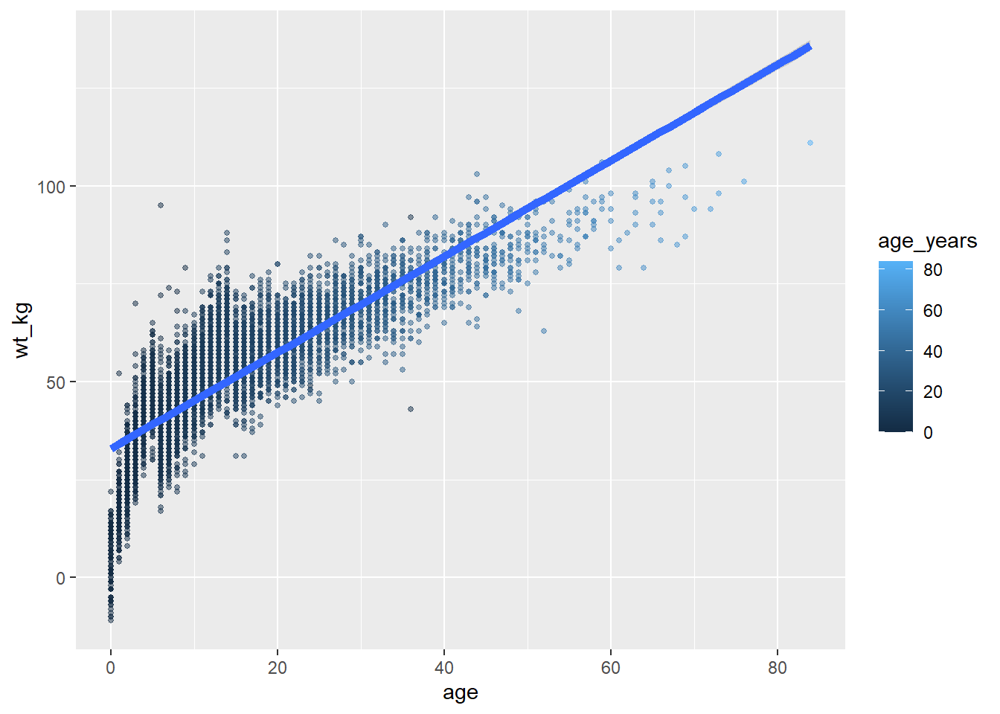
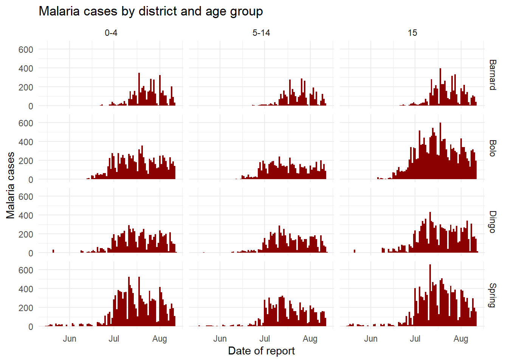
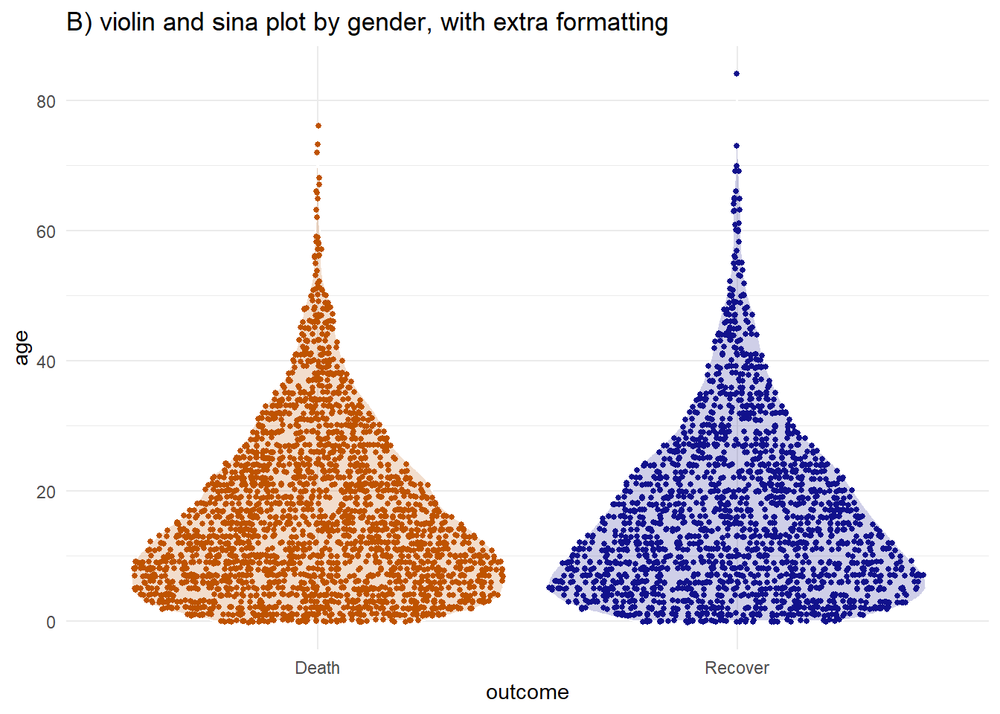
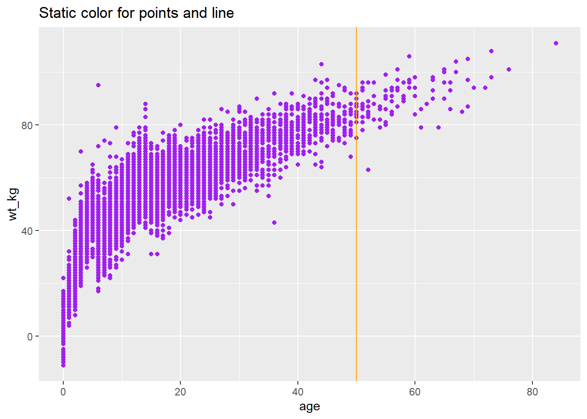
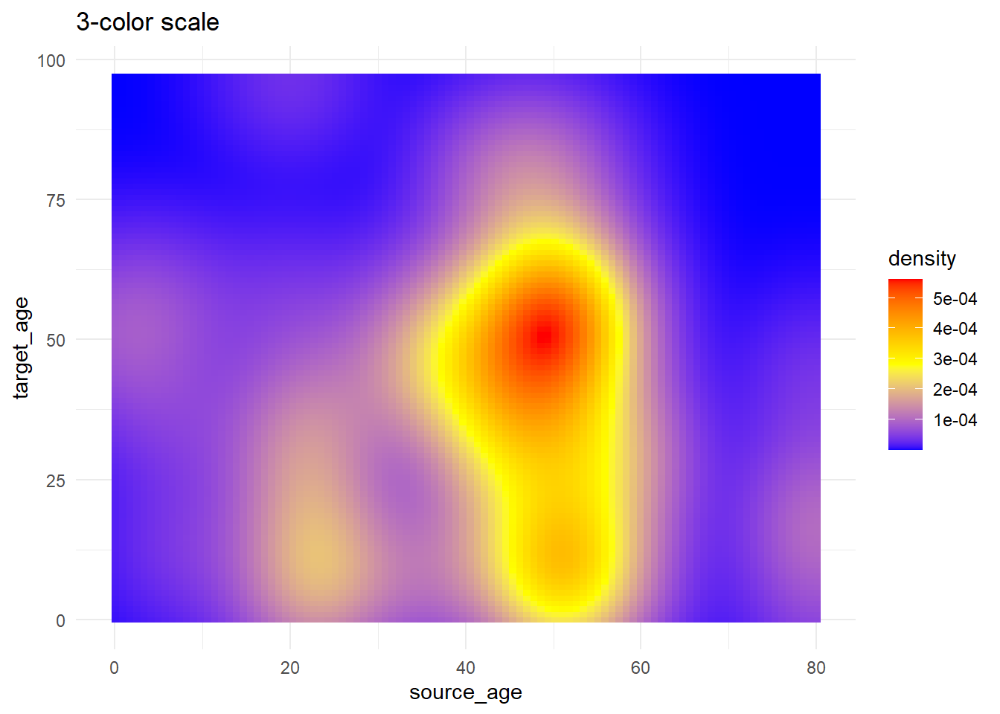

Data visualization
Extended Materials
ggplot2 is the most popular data visualisation R package. Its ggplot() function is at the core of this package, and this whole approach is colloquially known as “ggplot” with the resulting figures sometimes affectionately called “ggplots”. The “gg” in these names reflects the “grammar of graphics” used to construct the figures. ggplot2 benefits from a wide variety of supplementary R packages that further enhance its functionality.
The data visualization with ggplot cheatsheet from the RStudio website is a great reference to have on-hand when creating pltos. If you want inspiration for ways to creatively visualise your data, we suggest reviewing websites like the R graph gallery and Data-to-viz.
Data Preparation
Import data
We import the dataset of cases from a simulated Ebola epidemic. If you want to follow along, click to download the “clean” linelist (as .rds file).
The first 50 rows of the linelist are displayed below. We will focus on the continuous variables age, wt_kg (weight in kilos), ct_blood (CT values), and days_onset_hosp (difference between onset date and hospitalisation).
case_id generation date_infection date_onset date_hospitalisation
1 5fe599 4 2014-05-08 2014-05-13 2014-05-15
2 8689b7 4 <NA> 2014-05-13 2014-05-14
3 11f8ea 2 <NA> 2014-05-16 2014-05-18
4 b8812a 3 2014-05-04 2014-05-18 2014-05-20
5 893f25 3 2014-05-18 2014-05-21 2014-05-22
6 be99c8 3 2014-05-03 2014-05-22 2014-05-23
7 07e3e8 4 2014-05-22 2014-05-27 2014-05-29
8 369449 4 2014-05-28 2014-06-02 2014-06-03
9 f393b4 4 <NA> 2014-06-05 2014-06-06
10 1389ca 4 <NA> 2014-06-05 2014-06-07
11 2978ac 4 2014-05-30 2014-06-06 2014-06-08
12 57a565 4 2014-05-28 2014-06-13 2014-06-15
13 fc15ef 6 2014-06-14 2014-06-16 2014-06-17
14 2eaa9a 5 2014-06-07 2014-06-17 2014-06-17
15 bbfa93 6 2014-06-09 2014-06-18 2014-06-20
16 c97dd9 9 <NA> 2014-06-19 2014-06-19
17 f50e8a 10 <NA> 2014-06-22 2014-06-23
18 3a7673 8 <NA> 2014-06-23 2014-06-24
19 7f5a01 7 2014-06-23 2014-06-25 2014-06-27
20 ddddee 6 2014-06-18 2014-06-26 2014-06-28
21 99e8fa 7 2014-06-24 2014-06-28 2014-06-29
22 567136 6 <NA> 2014-07-02 2014-07-03
23 9371a9 8 <NA> 2014-07-08 2014-07-09
24 bc2adf 6 2014-07-03 2014-07-09 2014-07-09
25 403057 10 <NA> 2014-07-09 2014-07-11
26 8bd1e8 8 2014-07-10 2014-07-10 2014-07-11
27 f327be 6 2014-06-14 2014-07-12 2014-07-13
28 42e1a9 12 <NA> 2014-07-12 2014-07-14
29 90e5fe 5 2014-06-18 2014-07-13 2014-07-14
30 959170 8 2014-06-29 2014-07-13 2014-07-13
31 8ebf6e 7 2014-07-02 2014-07-14 2014-07-14
32 e56412 9 2014-07-12 2014-07-15 2014-07-17
33 6d788e 11 2014-07-12 2014-07-16 2014-07-17
34 a47529 5 2014-06-13 2014-07-17 2014-07-18
35 67be4e 8 2014-07-15 2014-07-17 2014-07-19
36 da8ecb 5 2014-06-20 2014-07-18 2014-07-20
37 148f18 6 <NA> 2014-07-19 2014-07-20
38 2cb9a5 11 <NA> 2014-07-22 2014-07-22
39 f5c142 7 2014-07-20 2014-07-22 2014-07-24
40 70a9fe 9 <NA> 2014-07-24 2014-07-26
41 3ad520 7 2014-07-12 2014-07-24 2014-07-24
42 062638 8 2014-07-19 2014-07-25 2014-07-27
43 c76676 9 2014-07-18 2014-07-25 2014-07-25
44 baacc1 12 2014-07-18 2014-07-27 2014-07-27
45 497372 13 2014-07-27 2014-07-29 2014-07-31
46 23e499 9 <NA> 2014-07-30 2014-08-01
47 38cc4a 8 2014-07-19 <NA> 2014-08-03
48 3789ee 10 2014-07-26 2014-08-01 2014-08-02
49 c71dcd 8 2014-07-24 2014-08-02 2014-08-02
50 6b70f0 7 <NA> 2014-08-03 2014-08-04
date_outcome outcome gender age age_unit age_years age_cat age_cat5
1 <NA> <NA> m 2 years 2 0-4 0-4
2 2014-05-18 Recover f 3 years 3 0-4 0-4
3 2014-05-30 Recover m 56 years 56 50-69 55-59
4 <NA> <NA> f 18 years 18 15-19 15-19
5 2014-05-29 Recover m 3 years 3 0-4 0-4
6 2014-05-24 Recover f 16 years 16 15-19 15-19
7 2014-06-01 Recover f 16 years 16 15-19 15-19
8 2014-06-07 Death f 0 years 0 0-4 0-4
9 2014-06-18 Recover m 61 years 61 50-69 60-64
10 2014-06-09 Death f 27 years 27 20-29 25-29
11 2014-06-15 Death m 12 years 12 10-14 10-14
12 <NA> Death m 42 years 42 30-49 40-44
13 2014-07-09 Recover m 19 years 19 15-19 15-19
14 <NA> Recover f 7 years 7 5-9 5-9
15 2014-06-30 <NA> f 7 years 7 5-9 5-9
16 2014-07-11 Recover m 13 years 13 10-14 10-14
17 2014-07-01 <NA> f 35 years 35 30-49 35-39
18 2014-06-25 <NA> f 17 years 17 15-19 15-19
19 2014-07-06 Death f 11 years 11 10-14 10-14
20 2014-07-02 Death f 11 years 11 10-14 10-14
21 2014-07-09 Recover m 19 years 19 15-19 15-19
22 2014-07-07 <NA> m 54 years 54 50-69 50-54
23 2014-07-20 <NA> f 14 years 14 10-14 10-14
24 <NA> <NA> m 28 years 28 20-29 25-29
25 2014-07-22 Death f 6 years 6 5-9 5-9
26 2014-07-16 <NA> m 3 years 3 0-4 0-4
27 2014-07-14 Death m 31 years 31 30-49 30-34
28 2014-07-20 Death f 6 years 6 5-9 5-9
29 2014-07-16 <NA> m 67 years 67 50-69 65-69
30 2014-07-19 Death f 14 years 14 10-14 10-14
31 2014-07-27 Recover f 10 years 10 10-14 10-14
32 2014-07-19 Death f 21 years 21 20-29 20-24
33 <NA> Recover m 20 years 20 20-29 20-24
34 2014-07-26 Death m 45 years 45 30-49 45-49
35 2014-08-14 Recover f 1 years 1 0-4 0-4
36 2014-08-01 <NA> m 12 years 12 10-14 10-14
37 2014-07-23 Death f 3 years 3 0-4 0-4
38 2014-08-28 Recover f 15 years 15 15-19 15-19
39 2014-07-28 Recover f 20 years 20 20-29 20-24
40 2014-07-19 Death m 36 years 36 30-49 35-39
41 <NA> <NA> f 7 years 7 5-9 5-9
42 2014-08-03 <NA> m 13 years 13 10-14 10-14
43 <NA> Death f 14 years 14 10-14 10-14
44 <NA> Death m 3 years 3 0-4 0-4
45 <NA> Death m 10 years 10 10-14 10-14
46 2014-08-06 Death f 1 years 1 0-4 0-4
47 2014-08-21 Recover m 0 years 0 0-4 0-4
48 2014-09-13 <NA> f 20 years 20 20-29 20-24
49 2014-08-04 Death m 26 years 26 20-29 25-29
50 <NA> Death m 14 years 14 10-14 10-14
hospital lon lat infector source
1 Other -13.21574 8.468973 f547d6 other
2 Missing -13.21523 8.451719 <NA> <NA>
3 St. Mark's Maternity Hospital (SMMH) -13.21291 8.464817 <NA> <NA>
4 Port Hospital -13.23637 8.475476 f90f5f other
5 Military Hospital -13.22286 8.460824 11f8ea other
6 Port Hospital -13.22263 8.461831 aec8ec other
7 Missing -13.23315 8.462729 893f25 other
8 Missing -13.23210 8.461444 133ee7 other
9 Missing -13.22255 8.461913 <NA> <NA>
10 Missing -13.25722 8.472923 <NA> <NA>
11 Port Hospital -13.22063 8.484016 996f3a other
12 Military Hospital -13.25399 8.458371 133ee7 other
13 Missing -13.23851 8.477617 37a6f6 other
14 Missing -13.20939 8.475702 9f6884 other
15 Other -13.21573 8.477799 4802b1 other
16 Port Hospital -13.22434 8.471451 <NA> <NA>
17 Port Hospital -13.23361 8.478048 <NA> <NA>
18 Port Hospital -13.21422 8.485280 <NA> <NA>
19 Missing -13.23397 8.469575 a75c7f other
20 Other -13.25356 8.459574 8e104d other
21 Port Hospital -13.22501 8.474049 ab634e other
22 Port Hospital -13.21607 8.488029 <NA> <NA>
23 St. Mark's Maternity Hospital (SMMH) -13.26807 8.473437 <NA> <NA>
24 Missing -13.22667 8.484083 b799eb other
25 Other -13.21602 8.462422 <NA> <NA>
26 Missing -13.24826 8.470268 5d9e4d other
27 St. Mark's Maternity Hospital (SMMH) -13.21563 8.463984 a15e13 other
28 Military Hospital -13.21424 8.464135 <NA> <NA>
29 Port Hospital -13.26149 8.456231 ea3740 other
30 Central Hospital -13.24530 8.483346 beb26e funeral
31 Military Hospital -13.26306 8.474940 567136 other
32 Central Hospital -13.23433 8.478321 894024 funeral
33 Missing -13.21991 8.469393 36e2e7 other
34 Military Hospital -13.22273 8.484806 a2086d other
35 Other -13.23431 8.471212 7baf73 other
36 Missing -13.21878 8.484384 eb2277 funeral
37 Missing -13.24837 8.484662 <NA> <NA>
38 Port Hospital -13.20975 8.477142 <NA> <NA>
39 Port Hospital -13.26809 8.462381 d6584f other
40 Port Hospital -13.25875 8.455686 <NA> <NA>
41 Missing -13.26264 8.463288 312ecf other
42 Central Hospital -13.26972 8.479407 52ea64 other
43 Military Hospital -13.22090 8.463539 cfd79c other
44 Other -13.23307 8.461790 d145b7 other
45 Other -13.26809 8.475087 174288 other
46 Other -13.25472 8.458258 <NA> <NA>
47 Missing -13.25737 8.453257 53608c funeral
48 St. Mark's Maternity Hospital (SMMH) -13.21374 8.473257 3b096b other
49 St. Mark's Maternity Hospital (SMMH) -13.21760 8.479116 f5c142 other
50 Missing -13.24864 8.484803 <NA> <NA>
wt_kg ht_cm ct_blood fever chills cough aches vomit temp time_admission
1 27 48 22 no no yes no yes 36.8 <NA>
2 25 59 22 <NA> <NA> <NA> <NA> <NA> 36.9 09:36
3 91 238 21 <NA> <NA> <NA> <NA> <NA> 36.9 16:48
4 41 135 23 no no no no no 36.8 11:22
5 36 71 23 no no yes no yes 36.9 12:60
6 56 116 21 no no yes no yes 37.6 14:13
7 47 87 21 <NA> <NA> <NA> <NA> <NA> 37.3 14:33
8 0 11 22 no no yes no yes 37.0 09:25
9 86 226 22 no no yes no yes 36.4 11:16
10 69 174 22 no no yes no no 35.9 10:55
11 67 112 22 no no yes no yes 36.5 16:03
12 84 186 22 no no yes no no 36.9 11:14
13 68 174 22 no no yes no no 36.5 12:42
14 44 90 21 no no yes no no 37.1 11:06
15 34 91 23 no no yes no yes 36.5 09:10
16 66 152 22 no no yes yes no 37.3 08:45
17 78 214 23 no yes yes no no 37.0 <NA>
18 47 137 21 no no yes no no 38.0 15:41
19 53 117 22 <NA> <NA> <NA> <NA> <NA> 38.0 13:34
20 47 131 23 no no yes no no 36.0 18:58
21 71 150 21 no no yes no yes 37.0 12:43
22 86 241 23 no no yes no no 36.7 16:33
23 53 131 21 no yes yes no no 36.9 14:29
24 69 161 24 no no yes no no 36.5 07:18
25 38 80 23 <NA> <NA> <NA> <NA> <NA> 37.0 08:11
26 46 69 22 no no yes no no 36.5 16:32
27 68 188 24 no no yes no no 37.6 16:17
28 37 66 23 no yes yes no no 36.6 07:32
29 100 233 20 <NA> <NA> <NA> <NA> <NA> 36.6 17:45
30 56 142 24 <NA> <NA> <NA> <NA> <NA> 36.2 <NA>
31 50 110 24 no no yes no no 36.4 13:24
32 57 182 20 no no yes no yes 37.1 14:43
33 65 164 24 <NA> <NA> <NA> <NA> <NA> 37.5 02:33
34 72 214 21 no no yes no yes 37.5 11:36
35 29 26 22 no no yes no yes 37.4 17:28
36 69 157 21 <NA> <NA> <NA> <NA> <NA> 36.9 16:27
37 37 39 23 <NA> <NA> <NA> <NA> <NA> 36.4 <NA>
38 48 154 22 no no yes yes yes 37.3 20:49
39 54 133 23 no no yes yes yes 37.0 <NA>
40 71 168 23 <NA> <NA> <NA> <NA> <NA> 37.8 11:38
41 47 100 23 no no yes no yes 36.5 14:25
42 61 125 22 no no yes no yes 37.5 13:42
43 47 123 23 <NA> <NA> <NA> <NA> <NA> 36.7 21:22
44 35 67 22 no no yes no yes 37.0 13:33
45 53 134 22 no yes yes no yes 37.3 19:06
46 16 31 22 no no yes no no 36.6 17:14
47 13 36 23 no no yes no yes 36.5 20:09
48 59 125 22 no no yes no yes 36.6 <NA>
49 69 183 22 no no no no yes 37.6 10:23
50 67 169 22 <NA> <NA> <NA> <NA> <NA> 36.8 09:09
bmi days_onset_hosp
1 117.18750 2
2 71.81844 1
3 16.06525 2
4 22.49657 2
5 71.41440 1
6 41.61712 1
7 62.09539 2
8 0.00000 1
9 16.83765 1
10 22.79033 2
11 53.41199 2
12 24.28026 2
13 22.46003 1
14 54.32099 0
15 41.05784 2
16 28.56648 0
17 17.03206 1
18 25.04129 1
19 38.71722 2
20 27.38768 2
21 31.55556 1
22 14.80691 1
23 30.88398 1
24 26.61934 0
25 59.37500 2
26 96.61836 1
27 19.23947 1
28 84.94031 2
29 18.41994 1
30 27.77227 0
31 41.32231 0
32 17.20807 2
33 24.16716 1
34 15.72190 1
35 428.99408 2
36 27.99302 2
37 243.26101 1
38 20.23950 0
39 30.52745 2
40 25.15590 2
41 47.00000 0
42 39.04000 2
43 31.06616 0
44 77.96837 0
45 29.51660 2
46 166.49324 2
47 100.30864 NA
48 37.76000 1
49 20.60378 0
50 23.45856 1General cleaning
Some simple ways we can prepare our data to make it better for plotting can include making the contents of the data better for display - which does not necessarily equate to better for data manipulation. For example:
- Replace
NAvalues in a character column with the character string “Unknown”
- Consider converting column to class factor so their values have prescribed ordinal levels
- Clean some columns so that their “data friendly” values with underscores etc are changed to normal text or title case.
Here are some examples of this in action:
# make display version of columns with more friendly names
linelist <- linelist %>%
mutate(
gender_disp = case_when(gender == "m" ~ "Male", # m to Male
gender == "f" ~ "Female", # f to Female,
is.na(gender) ~ "Unknown"), # NA to Unknown
outcome_disp = replace_na(outcome, "Unknown") # replace NA outcome with "unknown"
)Pivoting longer
As a matter of data structure, for ggplot2 we often also want to pivot our data into longer formats. We will learn more about pivoting later; for now it’s enough to be aware that these two data formats exist.

For example, say that we want to plot data that are in a “wide” format, such as for each case in the linelist and their symptoms. Below we create a mini-linelist called symptoms_data that contains only the case_id and symptoms columns.
symptoms_data <- linelist %>%
select(c(case_id, fever, chills, cough, aches, vomit))Here is how the first 50 rows of this mini-linelist look - see how they are formatted “wide” with each symptom as a column:
case_id fever chills cough aches vomit
1 5fe599 no no yes no yes
2 8689b7 <NA> <NA> <NA> <NA> <NA>
3 11f8ea <NA> <NA> <NA> <NA> <NA>
4 b8812a no no no no no
5 893f25 no no yes no yes
6 be99c8 no no yes no yes
7 07e3e8 <NA> <NA> <NA> <NA> <NA>
8 369449 no no yes no yes
9 f393b4 no no yes no yes
10 1389ca no no yes no no
11 2978ac no no yes no yes
12 57a565 no no yes no no
13 fc15ef no no yes no no
14 2eaa9a no no yes no no
15 bbfa93 no no yes no yes
16 c97dd9 no no yes yes no
17 f50e8a no yes yes no no
18 3a7673 no no yes no no
19 7f5a01 <NA> <NA> <NA> <NA> <NA>
20 ddddee no no yes no no
21 99e8fa no no yes no yes
22 567136 no no yes no no
23 9371a9 no yes yes no no
24 bc2adf no no yes no no
25 403057 <NA> <NA> <NA> <NA> <NA>
26 8bd1e8 no no yes no no
27 f327be no no yes no no
28 42e1a9 no yes yes no no
29 90e5fe <NA> <NA> <NA> <NA> <NA>
30 959170 <NA> <NA> <NA> <NA> <NA>
31 8ebf6e no no yes no no
32 e56412 no no yes no yes
33 6d788e <NA> <NA> <NA> <NA> <NA>
34 a47529 no no yes no yes
35 67be4e no no yes no yes
36 da8ecb <NA> <NA> <NA> <NA> <NA>
37 148f18 <NA> <NA> <NA> <NA> <NA>
38 2cb9a5 no no yes yes yes
39 f5c142 no no yes yes yes
40 70a9fe <NA> <NA> <NA> <NA> <NA>
41 3ad520 no no yes no yes
42 062638 no no yes no yes
43 c76676 <NA> <NA> <NA> <NA> <NA>
44 baacc1 no no yes no yes
45 497372 no yes yes no yes
46 23e499 no no yes no no
47 38cc4a no no yes no yes
48 3789ee no no yes no yes
49 c71dcd no no no no yes
50 6b70f0 <NA> <NA> <NA> <NA> <NA>If we wanted to plot the number of cases with specific symptoms, we are limited by the fact that each symptom is a specific column. However, we can pivot the symptoms columns to a longer format like this:
symptoms_data_long <- symptoms_data %>% # begin with "mini" linelist called symptoms_data
pivot_longer(
cols = -case_id, # pivot all columns except case_id (all the symptoms columns)
names_to = "symptom_name", # assign name for new column that holds the symptoms
values_to = "symptom_is_present") %>% # assign name for new column that holds the values (yes/no)
mutate(symptom_is_present = replace_na(symptom_is_present, "unknown")) # convert NA to "unknown"Here are the first 50 rows. Note that case has 5 rows - one for each possible symptom. The new columns symptom_name and symptom_is_present are the result of the pivot. Note that this format may not be very useful for other operations, but is useful for plotting.
# A tibble: 50 × 3
case_id symptom_name symptom_is_present
<chr> <chr> <chr>
1 5fe599 fever no
2 5fe599 chills no
3 5fe599 cough yes
4 5fe599 aches no
5 5fe599 vomit yes
6 8689b7 fever unknown
7 8689b7 chills unknown
8 8689b7 cough unknown
9 8689b7 aches unknown
10 8689b7 vomit unknown
# ℹ 40 more rowsBasics of ggplot
“Grammar of graphics” - ggplot2
Plotting with ggplot2 is based on “adding” plot layers and design elements on top of one another, with each command added to the previous ones with a plus symbol (+). The result is a multi-layer plot object that can be saved, modified, printed, exported, etc.
The idea behind the Grammar of Graphics it is that you can build every graph from the same 3 components: (1) a data set, (2) a coordinate system, and (3) geoms — i.e. visual marks that represent data points [source]
ggplot objects can be highly complex, but the basic order of layers will usually look like this:
- Begin with the baseline
ggplot()command - this “opens” the ggplot and allow subsequent functions to be added with+. Typically the dataset is also specified in this command
- Add “geom” layers - these functions visualize the data as geometries (shapes), e.g. as a bar graph, line plot, scatter plot, histogram (or a combination!). These functions all start with
geom_as a prefix.
- Add design elements to the plot such as axis labels, title, fonts, sizes, color schemes, legends, or axes rotation
In code this amounts to the basic template:
ggplot(data = <DATA>, mapping = aes(<MAPPINGS>)) + <GEOM_FUNCTION>()We can further expand this template to include aspects of the visualization such as theme and labels:
# plot data from my_data columns as red points
ggplot(data = my_data)+ # use the dataset "my_data"
geom_point( # add a layer of points (dots)
mapping = aes(x = col1, y = col2), # "map" data column to axes
color = "red")+ # other specification for the geom
labs()+ # here you add titles, axes labels, etc.
theme() # here you adjust color, font, size etc of non-data plot elements (axes, title, etc.) We will explain each component in the sections below.
ggplot()
The opening command of any ggplot2 plot is ggplot(). This command simply creates a blank canvas upon which to add layers. It “opens” the way for further layers to be added with a + symbol.
Typically, the command ggplot() includes the data = argument for the plot. This sets the default dataset to be used for subsequent layers of the plot.
This command will end with a + after its closing parentheses. This leaves the command “open”. The ggplot will only execute/appear when the full command includes a final layer without a + at the end.
# This will create plot that is a blank canvas
ggplot(data = linelist)Geoms
A blank canvas is certainly not sufficient - we need to create geometries (shapes) from our data (e.g. bar plots, histograms, scatter plots, box plots).
This is done by adding layers “geoms” to the initial ggplot() command. There are many ggplot2 functions that create “geoms”. Each of these functions begins with “geom_”, so we will refer to them generically as geom_XXXX(). There are over 40 geoms in ggplot2 and many others created by fans. View them at the ggplot2 gallery. Some common geoms are listed below:
- Histograms -
geom_histogram()
- Bar charts -
geom_bar()orgeom_col()(see “Bar plot” section)
- Box plots -
geom_boxplot()
- Points (e.g. scatter plots) -
geom_point()
- Line graphs -
geom_line()orgeom_path()
- Trend lines -
geom_smooth()
In one plot you can display one or multiple geoms. Each is added to previous ggplot2 commands with a +, and they are plotted sequentially such that later geoms are plotted on top of previous ones.
Mapping data to the plot
Most geom functions must be told what to use to create their shapes - so you must tell them how they should map (assign) columns in your data to components of the plot like the axes, shape colors, shape sizes, etc. For most geoms, the essential components that must be mapped to columns in the data are the x-axis, and (if necessary) the y-axis.
This “mapping” occurs with the mapping = argument. The mappings you provide to mapping must be wrapped in the aes() function, so you would write something like mapping = aes(x = col1, y = col2), as shown below.
Below, in the ggplot() command the data are set as the case linelist. In the mapping = aes() argument the column age is mapped to the x-axis, and the column wt_kg is mapped to the y-axis.
After a +, the plotting commands continue. A shape is created with the “geom” function geom_point(). This geom inherits the mappings from the ggplot() command above - it knows the axis-column assignments and proceeds to visualize those relationships as points on the canvas.
ggplot(data = linelist, mapping = aes(x = age, y = wt_kg))+
geom_point()
As another example, the following commands utilize the same data, a slightly different mapping, and a different geom. The geom_histogram() function only requires a column mapped to the x-axis, as the counts y-axis is generated automatically.
ggplot(data = linelist, mapping = aes(x = age))+
geom_histogram()
Plot aesthetics
In ggplot terminology a plot “aesthetic” has a specific meaning. It refers to a visual property of plotted data. Note that “aesthetic” here refers to the data being plotted in geoms/shapes - not the surrounding display such as titles, axis labels, background color, that you might associate with the word “aesthetics” in common English. In ggplot those details are called “themes” and are adjusted within a theme() command (see this section).
Therefore, plot object aesthetics can be colors, sizes, transparencies, placement, etc. of the plotted data. Not all geoms will have the same aesthetic options, but many can be used by most geoms. Here are some examples:
shape =Display a point withgeom_point()as a dot, star, triangle, or square…
fill =The interior color (e.g. of a bar or boxplot)
color =The exterior line of a bar, boxplot, etc., or the point color if usinggeom_point()
size =Size (e.g. line thickness, point size)
alpha =Transparency (1 = opaque, 0 = invisible)
binwidth =Width of histogram bins
width =Width of “bar plot” columns
linetype =Line type (e.g. solid, dashed, dotted)
These plot object aesthetics can be assigned values in two ways:
- Assigned a static value (e.g.
color = "blue") to apply across all plotted observations
- Assigned to a column of the data (e.g.
color = hospital) such that display of each observation depends on its value in that column
Set to a static value
If you want the plot object aesthetic to be static, that is - to be the same for every observation in the data, you write its assignment within the geom but outside of any mapping = aes() statement. These assignments could look like size = 1 or color = "blue". Here are two examples:
- In the first example, the
mapping = aes()is in theggplot()command and the axes are mapped to age and weight columns in the data. The plot aestheticscolor =,size =, andalpha =(transparency) are assigned to static values. For clarity, this is done in thegeom_point()function, as you may add other geoms afterward that would take different values for their plot aesthetics.
- In the second example, the histogram requires only the x-axis mapped to a column. The histogram
binwidth =,color =,fill =(internal color), andalpha =are again set within the geom to static values.
# scatterplot
ggplot(data = linelist, mapping = aes(x = age, y = wt_kg))+ # set data and axes mapping
geom_point(color = "darkgreen", size = 0.5, alpha = 0.2) # set static point aesthetics
# histogram
ggplot(data = linelist, mapping = aes(x = age))+ # set data and axes
geom_histogram( # display histogram
binwidth = 7, # width of bins
color = "red", # bin line color
fill = "blue", # bin interior color
alpha = 0.1) # bin transparency

Scaled to column values
The alternative is to scale the plot object aesthetic by the values in a column. In this approach, the display of this aesthetic will depend on that observation’s value in that column of the data. If the column values are continuous, the display scale (legend) for that aesthetic will be continuous. If the column values are discrete, the legend will display each value and the plotted data will appear as distinctly “grouped” (read more in the grouping section of this page).
To achieve this, you map that plot aesthetic to a column name (not in quotes). This must be done within a mapping = aes() function (note: there are several places in the code you can make these mapping assignments, as discussed below).
Two examples are below.
- In the first example, the
color =aesthetic (of each point) is mapped to the columnage- and a scale has appeared in a legend! For now just note that the scale exists - we will show how to modify it in later sections.
- In the second example two new plot aesthetics are also mapped to columns (
color =andsize =), while the plot aestheticsshape =andalpha =are mapped to static values outside of anymapping = aes()function.
# scatterplot
ggplot(data = linelist, # set data
mapping = aes( # map aesthetics to column values
x = age, # map x-axis to age
y = wt_kg, # map y-axis to weight
color = age)
)+ # map color to age
geom_point() # display data as points
# scatterplot
ggplot(data = linelist, # set data
mapping = aes( # map aesthetics to column values
x = age, # map x-axis to age
y = wt_kg, # map y-axis to weight
color = age, # map color to age
size = age))+ # map size to age
geom_point( # display data as points
shape = "diamond", # points display as diamonds
alpha = 0.3) # point transparency at 30%

Note
Axes assignments are always assigned to columns in the data (not to static values), and this is always done within mapping = aes().
It becomes important to keep track of your plot layers and aesthetics when making more complex plots - for example plots with multiple geoms. In the example below, the size = aesthetic is assigned twice - once for geom_point() and once for geom_smooth() - both times as a static value.
ggplot(data = linelist,
mapping = aes( # map aesthetics to columns
x = age,
y = wt_kg,
color = age_years)
) +
geom_point( # add points for each row of data
size = 1,
alpha = 0.5) +
geom_smooth( # add a trend line
method = "lm", # with linear method
size = 2) # size (width of line) of 2
Where to make mapping assignments
Aesthetic mapping within mapping = aes() can be written in several places in your plotting commands and can even be written more than once. This can be written in the top ggplot() command, and/or for each individual geom beneath. The nuances include:
- Mapping assignments made in the top
ggplot()command will be inherited as defaults across any geom below, like howx =andy =are inherited - Mapping assignments made within one geom apply only to that geom
Likewise, data = specified in the top ggplot() will apply by default to any geom below, but you could also specify data for each geom (but this is more difficult).
Thus, each of the following commands will create the same plot:
# These commands will produce the exact same plot
ggplot(data = linelist, mapping = aes(x = age))+
geom_histogram()
ggplot(data = linelist)+
geom_histogram(mapping = aes(x = age))
ggplot()+
geom_histogram(data = linelist, mapping = aes(x = age))Groups
You can easily group the data and “plot by group”. In fact, you have already done this!
Assign the “grouping” column to the appropriate plot aesthetic, within a mapping = aes(). Above, we demonstrated this using continuous values when we assigned point size = to the column age. However this works the same way for discrete/categorical columns.
For example, if you want points to be displayed by gender, you would set mapping = aes(color = gender). A legend automatically appears. This assignment can be made within the mapping = aes() in the top ggplot() command (and be inherited by the geom), or it could be set in a separate mapping = aes() within the geom. Both approaches are shown below:
ggplot(data = linelist,
mapping = aes(x = age, y = wt_kg, color = gender))+
geom_point(alpha = 0.5)
# This alternative code produces the same plot
ggplot(data = linelist,
mapping = aes(x = age, y = wt_kg))+
geom_point(
mapping = aes(color = gender),
alpha = 0.5)Note that depending on the geom, you will need to use different arguments to group the data. For geom_point() you will most likely use color =, shape = or size =. Whereas for geom_bar() you are more likely to use fill =. This just depends on the geom and what plot aesthetic you want to reflect the groupings.
For your information - the most basic way of grouping the data is by using only the group = argument within mapping = aes(). However, this by itself will not change the colors, fill, or shapes. Nor will it create a legend. Yet the data are grouped, so statistical displays may be affected.
Facets / Small-multiples
Facets, or “small-multiples”, are used to split one plot into a multi-panel figure, with one panel (“facet”) per group of data. The same type of plot is created multiple times, each one using a sub-group of the same dataset.
Faceting is a functionality that comes with ggplot2, so the legends and axes of the facet “panels” are automatically aligned. We would need to use other packages to combine completely different plots (cowplot and patchwork) into one figure.
Faceting is done with one of the following ggplot2 functions:
facet_wrap()To show a different panel for each level of a single variable. One example of this could be showing a different epidemic curve for each hospital in a region. Facets are ordered alphabetically, unless the variable is a factor with other ordering defined.
- You can invoke certain options to determine the layout of the facets, e.g.
nrow = 1orncol = 1to control the number of rows or columns that the faceted plots are arranged within.
facet_grid()This is used when you want to bring a second variable into the faceting arrangement. Here each panel of a grid shows the intersection between values in two columns. For example, epidemic curves for each hospital-age group combination with hospitals along the top (columns) and age groups along the sides (rows).
nrowandncolare not relevant, as the subgroups are presented in a grid
Each of these functions accept a formula syntax to specify the column(s) for faceting. Both accept up to two columns, one on each side of a tilde ~.
For
facet_wrap()most often you will write only one column preceded by a tilde~likefacet_wrap(~hospital). However you can write two columnsfacet_wrap(outcome ~ hospital)- each unique combination will display in a separate panel, but they will not be arranged in a grid. The headings will show combined terms and these won’t be specific logic to the columns vs. rows. If you are providing only one faceting variable, a period.is used as a placeholder on the other side of the formula - see the code examples.For
facet_grid()you can also specify one or two columns to the formula (gridrows ~ columns). If you only want to specify one, you can place a period.on the other side of the tilde likefacet_grid(. ~ hospital)orfacet_grid(hospital ~ .).
Facets can quickly contain an overwhelming amount of information - its good to ensure you don’t have too many levels of each variable that you choose to facet by. Here are some quick examples with the malaria dataset which consists of daily case counts of malaria for facilities, by age group.
Below we import and do some quick modifications for simplicity:
# These data are daily counts of malaria cases, by facility-day
malaria_data <- import("data/malaria_facility_count_data.rds") %>% # import
select(-submitted_date, -Province, -newid) # remove unneeded columnsThe first 50 rows of the malaria data are below. Note there is a column malaria_tot, but also columns for counts by age group (these will be used in the second, facet_grid() example).
# A tibble: 50 × 7
location_name data_date District `malaria_rdt_0-4` `malaria_rdt_5-14`
<chr> <date> <chr> <int> <int>
1 Facility 1 2020-08-11 Spring 11 12
2 Facility 2 2020-08-11 Bolo 11 10
3 Facility 3 2020-08-11 Dingo 8 5
4 Facility 4 2020-08-11 Bolo 16 16
5 Facility 5 2020-08-11 Bolo 9 2
6 Facility 6 2020-08-11 Dingo 3 1
7 Facility 6 2020-08-10 Dingo 4 0
8 Facility 5 2020-08-10 Bolo 15 14
9 Facility 5 2020-08-09 Bolo 11 11
10 Facility 5 2020-08-08 Bolo 19 15
# ℹ 40 more rows
# ℹ 2 more variables: malaria_rdt_15 <int>, malaria_tot <int>facet_wrap()
For the moment, let’s focus on the columns malaria_tot and District. Ignore the age-specific count columns for now. We will plot epidemic curves with geom_col(), which produces a column for each day at the specified y-axis height given in column malaria_tot (the data are already daily counts, so we use geom_col() - see the “Bar plot” section below).
When we add the command facet_wrap(), we specify a tilde and then the column to facet on (District in this case). You can place another column on the left side of the tilde, - this will create one facet for each combination - but we recommend you do this with facet_grid() instead. In this use case, one facet is created for each unique value of District.
# A plot with facets by district
ggplot(malaria_data, aes(x = data_date, y = malaria_tot)) +
geom_col(width = 1, fill = "darkred") + # plot the count data as columns
theme_minimal()+ # simplify the background panels
labs( # add plot labels, title, etc.
x = "Date of report",
y = "Malaria cases",
title = "Malaria cases by district") +
facet_wrap(~District) # the facets are created
facet_grid()
We can use a facet_grid() approach to cross two variables. Let’s say we want to cross District and age. Well, we need to do some data transformations on the age columns to get these data into ggplot-preferred “long” format. The age groups all have their own columns - we want them in a single column called age_group and another called num_cases.
malaria_age <- malaria_data %>%
select(-malaria_tot) %>%
pivot_longer(
cols = c(starts_with("malaria_rdt_")), # choose columns to pivot longer
names_to = "age_group", # column names become age group
values_to = "num_cases" # values to a single column (num_cases)
) %>%
mutate(
age_group = str_replace(age_group, "malaria_rdt_", ""),
age_group = forcats::fct_relevel(age_group, "5-14", after = 1))Now the first 50 rows of data look like this:
# A tibble: 50 × 5
location_name data_date District age_group num_cases
<chr> <date> <chr> <fct> <int>
1 Facility 1 2020-08-11 Spring 0-4 11
2 Facility 1 2020-08-11 Spring 5-14 12
3 Facility 1 2020-08-11 Spring 15 23
4 Facility 2 2020-08-11 Bolo 0-4 11
5 Facility 2 2020-08-11 Bolo 5-14 10
6 Facility 2 2020-08-11 Bolo 15 5
7 Facility 3 2020-08-11 Dingo 0-4 8
8 Facility 3 2020-08-11 Dingo 5-14 5
9 Facility 3 2020-08-11 Dingo 15 5
10 Facility 4 2020-08-11 Bolo 0-4 16
# ℹ 40 more rowsWhen you pass the two variables to facet_grid(), easiest is to use formula notation (e.g. x ~ y) where x is rows and y is columns. Here is the plot, using facet_grid() to show the plots for each combination of the columns age_group and District.
ggplot(malaria_age, aes(x = data_date, y = num_cases)) +
geom_col(fill = "darkred", width = 1) +
theme_minimal()+
labs(
x = "Date of report",
y = "Malaria cases",
title = "Malaria cases by district and age group"
) +
facet_grid(District ~ age_group)
Free or fixed axes
The axes scales displayed when faceting are by default the same (fixed) across all the facets. This is helpful for cross-comparison, but not always appropriate.
When using facet_wrap() or facet_grid(), we can add scales = "free_y" to “free” or release the y-axes of the panels to scale appropriately to their data subset. This is particularly useful if the actual counts are small for one of the subcategories and trends are otherwise hard to see. Instead of “free_y” we can also write “free_x” to do the same for the x-axis (e.g. for dates) or “free” for both axes. Note that in facet_grid, the y scales will be the same for facets in the same row, and the x scales will be the same for facets in the same column.
When using facet_grid only, we can add space = "free_y" or space = "free_x" so that the actual height or width of the facet is weighted to the values of the figure within. This only works if scales = "free" (y or x) is already applied.
# Free y-axis
ggplot(malaria_data, aes(x = data_date, y = malaria_tot)) +
geom_col(width = 1, fill = "darkred") + # plot the count data as columns
theme_minimal()+ # simplify the background panels
labs( # add plot labels, title, etc.
x = "Date of report",
y = "Malaria cases",
title = "Malaria cases by district - 'free' x and y axes") +
facet_wrap(~District, scales = "free") # the facets are createdExporting plots
Exporting ggplots is made easy with the ggsave() function from ggplot2. It can work in two ways, either:
- Specify the name of the plot object, then the file path and name with extension
- For example:
ggsave(my_plot, "plots/my_plot.png"))
- For example:
- Run the command with only a file path, to save the last plot that was printed
- For example:
ggsave("plots/my_plot.png"))
- For example:
You can export as png, pdf, jpeg, tiff, bmp, svg, or several other file types, by specifying the file extension in the file path.
You can also specify the arguments width =, height =, and units = (either “in”, “cm”, or “mm”). You can also specify dpi = with a number for plot resolution (e.g. 300). See the function details by entering ?ggsave or reading the documentation online.
Labels
Surely you will want to add or adjust the plot’s labels. These are most easily done within the labs() function which is added to the plot with + just as the geoms were.
Within labs() you can provide character strings to these arguements:
x =andy =The x-axis and y-axis title (labels)
title =The main plot title
subtitle =The subtitle of the plot, in smaller text below the title
caption =The caption of the plot, in bottom-right by default
Here is a plot we made earlier, but with nicer labels:
age_by_wt <- ggplot(
data = linelist, # set data
mapping = aes( # map aesthetics to column values
x = age, # map x-axis to age
y = wt_kg, # map y-axis to weight
color = age))+ # map color to age
geom_point()+ # display data as points
labs(
title = "Age and weight distribution",
subtitle = "Fictional Ebola outbreak, 2014",
x = "Age in years",
y = "Weight in kilos",
color = "Age",
caption = stringr::str_glue("Data as of {max(linelist$date_hospitalisation, na.rm=T)}"))
age_by_wt
Note how in the caption assignment we used str_glue() from the stringr package to implant dynamic R code within the string text. The caption will show the “Data as of:” date that reflects the maximum hospitalization date in the linelist.
Plot continuous data
Throughout this page, you have already seen many examples of plotting continuous data. Here we briefly consolidate these and present a few variations.
Visualisations covered here include:
- Plots for one continuous variable:
- Histogram, a classic graph to present the distribution of a continuous variable.
- Box plot (also called box and whisker), to show the 25th, 50th, and 75th percentiles, tail ends of the distribution, and outliers (important limitations).
- Jitter plot, to show all values as points that are ‘jittered’ so they can (mostly) all be seen, even where two have the same value.
- Violin plot, show the distribution of a continuous variable based on the symmetrical width of the ‘violin’.
- Sina plot, are a combination of jitter and violin plots, where individual points are shown but in the symmetrical shape of the distribution (via ggforce package).
- Scatter plot for two continuous variables.
- Heat plots for three continuous variables
Histograms
Histograms may look like bar charts, but are distinct because they measure the distribution of a continuous variable. There are no spaces between the “bars”, and only one column is provided to geom_histogram().
Below is code for generating histograms, which group continuous data into ranges and display in adjacent bars of varying height. This is done using geom_histogram(). See the “Bar plot” section of the ggplot basics page to understand difference between geom_histogram(), geom_bar(), and geom_col().
We will show the distribution of ages of cases. Within mapping = aes() specify which column you want to see the distribution of. You can assign this column to either the x or the y axis.
The rows will be assigned to “bins” based on their numeric age, and these bins will be graphically represented by bars. If you specify a number of bins with the bins = plot aesthetic, the break points are evenly spaced between the minimum and maximum values of the histogram. If bins = is unspecified, an appropriate number of bins will be guessed and this message displayed after the plot:
## `stat_bin()` using `bins = 30`. Pick better value with `binwidth`.If you do not want to specify a number of bins to bins =, you could alternatively specify binwidth = in the units of the axis. We give a few examples showing different bins and bin widths:
# A) Regular histogram
ggplot(data = linelist, aes(x = age))+ # provide x variable
geom_histogram()+
labs(title = "A) Default histogram (30 bins)")
# B) More bins
ggplot(data = linelist, aes(x = age))+ # provide x variable
geom_histogram(bins = 50)+
labs(title = "B) Set to 50 bins")
# C) Fewer bins
ggplot(data = linelist, aes(x = age))+ # provide x variable
geom_histogram(bins = 5)+
labs(title = "C) Set to 5 bins")
# D) More bins
ggplot(data = linelist, aes(x = age))+ # provide x variable
geom_histogram(binwidth = 1)+
labs(title = "D) binwidth of 1")


To get smoothed proportions, you can use geom_density():
# Frequency with proportion axis, smoothed
ggplot(data = linelist, mapping = aes(x = age)) +
geom_density(size = 2, alpha = 0.2)+
labs(title = "Proportional density")
# Stacked frequency with proportion axis, smoothed
ggplot(data = linelist, mapping = aes(x = age, fill = gender)) +
geom_density(size = 2, alpha = 0.2, position = "stack")+
labs(title = "'Stacked' proportional densities")

To get a “stacked” histogram (of a continuous column of data), you can do one of the following:
- Use
geom_histogram()with thefill =argument withinaes()and assigned to the grouping column, or
- Use
geom_freqpoly(), which is likely easier to read (you can still setbinwidth =)
- To see proportions of all values, set the
y = after_stat(density)(use this syntax exactly - not changed for your data). Note: these proportions will show per group.
Each is shown below (*note use of color = vs. fill = in each):
# "Stacked" histogram
ggplot(data = linelist, mapping = aes(x = age, fill = gender)) +
geom_histogram(binwidth = 2)+
labs(title = "'Stacked' histogram")
# Frequency
ggplot(data = linelist, mapping = aes(x = age, color = gender)) +
geom_freqpoly(binwidth = 2, size = 2)+
labs(title = "Freqpoly")
# Frequency with proportion axis
ggplot(data = linelist, mapping = aes(x = age, y = after_stat(density), color = gender)) +
geom_freqpoly(binwidth = 5, size = 2)+
labs(title = "Proportional freqpoly")
# Frequency with proportion axis, smoothed
ggplot(data = linelist, mapping = aes(x = age, y = after_stat(density), fill = gender)) +
geom_density(size = 2, alpha = 0.2)+
labs(title = "Proportional, smoothed with geom_density()")


If you want to have some fun, try geom_density_ridges from the ggridges package (vignette here.
Read more in detail about histograms at the tidyverse page on geom_histogram().
Box plots
Box plots are common, but have important limitations. They can obscure the actual distribution - e.g. a bi-modal distribution. See this R graph gallery and this data-to-viz article for more details. However, they do nicely display the inter-quartile range and outliers - so they can be overlaid on top of other types of plots that show the distribution in more detail.
Below we remind you of the various components of a boxplot:

When using geom_boxplot() to create a box plot, you generally map only one axis (x or y) within aes(). The axis specified determines if the plots are horizontal or vertical.
In most geoms, you create a plot per group by mapping an aesthetic like color = or fill = to a column within aes(). However, for box plots achieve this by assigning the grouping column to the un-assigned axis (x or y). Below is code for a boxplot of all age values in the dataset, and second is code to display one box plot for each (non-missing) gender in the dataset. Note that NA (missing) values will appear as a separate box plot unless removed. In this example we also set the fill to the column outcome so each plot is a different color - but this is not necessary.
# A) Overall boxplot
ggplot(data = linelist)+
geom_boxplot(mapping = aes(y = age))+ # only y axis mapped (not x)
labs(title = "A) Overall boxplot")
# B) Box plot by group
ggplot(data = linelist, mapping = aes(y = age, x = gender, fill = gender)) +
geom_boxplot()+
theme(legend.position = "none")+ # remove legend (redundant)
labs(title = "B) Boxplot by gender") 

Violin, jitter, and sina plots
Below is code for creating violin plots (geom_violin) and jitter plots (geom_jitter) to show distributions. You can specify that the fill or color is also determined by the data, by inserting these options within aes().
# A) Jitter plot by group
ggplot(data = linelist %>% drop_na(outcome), # remove missing values
mapping = aes(y = age, # Continuous variable
x = outcome, # Grouping variable
color = outcome))+ # Color variable
geom_jitter()+ # Create the violin plot
labs(title = "A) jitter plot by gender")
# B) Violin plot by group
ggplot(data = linelist %>% drop_na(outcome), # remove missing values
mapping = aes(y = age, # Continuous variable
x = outcome, # Grouping variable
fill = outcome))+ # fill variable (color)
geom_violin()+ # create the violin plot
labs(title = "B) violin plot by gender") 
You can combine the two using the geom_sina() function from the ggforce package. The sina plots the jitter points in the shape of the violin plot. When overlaid on the violin plot (adjusting the transparencies) this can be easier to visually interpret.
# A) Sina plot by group
ggplot(
data = linelist %>% drop_na(outcome),
aes(y = age, # numeric variable
x = outcome)) + # group variable
geom_violin(
aes(fill = outcome), # fill (color of violin background)
color = "white", # white outline
alpha = 0.2)+ # transparency
geom_sina(
size=1, # Change the size of the jitter
aes(color = outcome))+ # color (color of dots)
scale_fill_manual( # Define fill for violin background by death/recover
values = c("Death" = "#bf5300",
"Recover" = "#11118c")) +
scale_color_manual( # Define colours for points by death/recover
values = c("Death" = "#bf5300",
"Recover" = "#11118c")) +
theme_minimal() + # Remove the gray background
theme(legend.position = "none") + # Remove unnecessary legend
labs(title = "B) violin and sina plot by gender, with extra formatting") 
Two continuous variables
Following similar syntax, geom_point() will allow you to plot two continuous variables against each other in a scatter plot. This is useful for showing actual values rather than their distributions. A basic scatter plot of age vs weight is shown in (A). In (B) we again use facet_grid() to show the relationship between two continuous variables in the linelist.
# Basic scatter plot of weight and age
ggplot(data = linelist,
mapping = aes(y = wt_kg, x = age))+
geom_point() +
labs(title = "A) Scatter plot of weight and age")
# Scatter plot of weight and age by gender and Ebola outcome
ggplot(data = linelist %>% drop_na(gender, outcome), # filter retains non-missing gender/outcome
mapping = aes(y = wt_kg, x = age))+
geom_point() +
labs(title = "B) Scatter plot of weight and age faceted by gender and outcome")+
facet_grid(gender ~ outcome) 

Three continuous variables
You can display three continuous variables by utilizing the fill = argument to create a heat plot. The color of each “cell” will reflect the value of the third continuous column of data. There are ways to make 3D plots in R, but for applied epidemiology these are often difficult to interpret and therefore less useful for decision-making.
Plot categorical data
Categorical data can be character values, could be logical (TRUE/FALSE), or factors.
Preparation
Data structure
The first thing to understand about your categorical data is whether it exists as raw observations like a linelist of cases, or as a summary or aggregate data frame that holds counts or proportions. The state of your data will impact which plotting function you use:
- If your data are raw observations with one row per observation, you will likely use
geom_bar()
- If your data are already aggregated into counts or proportions, you will likely use
geom_col()
Column class and value ordering
Next, examine the class of the columns you want to plot. We look at hospital, first with class() from base R, and with tabyl() from janitor.
# View class of hospital column - we can see it is a character
class(linelist$hospital)[1] "character"# Look at values and proportions within hospital column
linelist %>%
tabyl(hospital) hospital n percent
Central Hospital 454 0.07710598
Military Hospital 896 0.15217391
Missing 1469 0.24949049
Other 885 0.15030571
Port Hospital 1762 0.29925272
St. Mark's Maternity Hospital (SMMH) 422 0.07167120We can see the values within are characters, as they are hospital names, and by default they are ordered alphabetically. There are ‘other’ and ‘missing’ values, which we would prefer to be the last subcategories when presenting breakdowns. So we change this column into a factor and re-order it.
# Convert to factor and define level order so "Other" and "Missing" are last
linelist <- linelist %>%
mutate(
hospital = fct_relevel(hospital,
"St. Mark's Maternity Hospital (SMMH)",
"Port Hospital",
"Central Hospital",
"Military Hospital",
"Other",
"Missing"))levels(linelist$hospital)[1] "St. Mark's Maternity Hospital (SMMH)"
[2] "Port Hospital"
[3] "Central Hospital"
[4] "Military Hospital"
[5] "Other"
[6] "Missing" geom_bar()
Use geom_bar() if you want bar height (or the height of stacked bar components) to reflect the number of relevant rows in the data. These bars will have gaps between them, unless the width = plot aesthetic is adjusted.
- Provide only one axis column assignment (typically x-axis). If you provide x and y, you will get
Error: stat_count() can only have an x or y aesthetic.
- You can create stacked bars by adding a
fill =column assignment withinmapping = aes()
- The opposite axis will be titled “count” by default, because it represents the number of rows
Below, we have assigned outcome to the y-axis, but it could just as easily be on the x-axis. If you have longer character values, it can sometimes look better to flip the bars sideways and put the legend on the bottom. This may impact how your factor levels are ordered - in this case we reverse them with fct_rev() to put missing and other at the bottom.
# A) Outcomes in all cases
ggplot(linelist %>% drop_na(outcome)) +
geom_bar(aes(y = fct_rev(hospital)), width = 0.7) +
theme_minimal()+
labs(title = "A) Number of cases by hospital",
y = "Hospital")
# B) Outcomes in all cases by hosptial
ggplot(linelist %>% drop_na(outcome)) +
geom_bar(aes(y = fct_rev(hospital), fill = outcome), width = 0.7) +
theme_minimal()+
theme(legend.position = "bottom") +
labs(title = "B) Number of recovered and dead Ebola cases, by hospital",
y = "Hospital")

geom_col()
Use geom_col() if you want bar height (or height of stacked bar components) to reflect pre-calculated values that exists in the data. Often, these are summary or “aggregated” counts, or proportions.
Provide column assignments for both axes to geom_col(). Typically your x-axis column is discrete and your y-axis column is numeric.
Let’s say we have this dataset outcomes:
# A tibble: 2 × 3
outcome n proportion
<chr> <int> <dbl>
1 Death 1022 56.2
2 Recover 796 43.8Below is code using geom_col for creating simple bar charts to show the distribution of Ebola patient outcomes. With geom_col, both x and y need to be specified. Here x is the categorical variable along the x axis, and y is the generated proportions column proportion.
# Outcomes in all cases
ggplot(outcomes) +
geom_col(aes(x=outcome, y = proportion)) +
labs(subtitle = "Number of recovered and dead Ebola cases")
To show breakdowns by hospital, we would need our table to contain more information, and to be in “long” format. We create this table with the frequencies of the combined categories outcome and hospital.
outcomes2 <- linelist %>%
drop_na(outcome) %>%
count(hospital, outcome) %>% # get counts by hospital and outcome
group_by(hospital) %>% # Group so proportions are out of hospital total
mutate(proportion = n/sum(n)*100) # calculate proportions of hospital total
head(outcomes2) # Preview data# A tibble: 6 × 4
# Groups: hospital [3]
hospital outcome n proportion
<fct> <chr> <int> <dbl>
1 St. Mark's Maternity Hospital (SMMH) Death 199 61.2
2 St. Mark's Maternity Hospital (SMMH) Recover 126 38.8
3 Port Hospital Death 785 57.6
4 Port Hospital Recover 579 42.4
5 Central Hospital Death 193 53.9
6 Central Hospital Recover 165 46.1We then create the ggplot with some added formatting:
- Axis flip: Swapped the axis around with
coord_flip()so that we can read the hospital names. - Columns side-by-side: Added a
position = "dodge"argument so that the bars for death and recover are presented side by side rather than stacked. Note stacked bars are the default. - Column width: Specified ‘width’, so the columns are half as thin as the full possible width.
- Column order: Reversed the order of the categories on the y axis so that ‘Other’ and ‘Missing’ are at the bottom, with
scale_x_discrete(limits=rev). Note that we used that rather thanscale_y_discretebecause hospital is stated in thexargument ofaes(), even if visually it is on the y axis. We do this because Ggplot seems to present categories backwards unless we tell it not to.
- Other details: Labels/titles and colours added within
labsandscale_fill_colorrespectively.
# Outcomes in all cases by hospital
ggplot(outcomes2) +
geom_col(
mapping = aes(
x = proportion, # show pre-calculated proportion values
y = fct_rev(hospital), # reverse level order so missing/other at bottom
fill = outcome), # stacked by outcome
width = 0.5)+ # thinner bars (out of 1)
theme_minimal() + # Minimal theme
theme(legend.position = "bottom")+
labs(subtitle = "Number of recovered and dead Ebola cases, by hospital",
fill = "Outcome", # legend title
y = "Count", # y axis title
x = "Hospital of admission")+ # x axis title
scale_fill_manual( # adding colors manually
values = c("Death"= "#3B1c8C",
"Recover" = "#21908D" )) 
Note that the proportions are binary, so we may prefer to drop ‘recover’ and just show the proportion who died. This is just for illustration purposes.
If using geom_col() with dates data (e.g. an epicurve from aggregated data) - you will want to adjust the width = argument to remove the “gap” lines between the bars. If using daily data set width = 1. If weekly, width = 7. Months are not possible because each month has a different number of days.
Themes
One of the best parts of ggplot2 is the amount of control you have over the plot - you can define anything! As mentioned above, the design of the plot that is not related to the data shapes/geometries are adjusted within the theme() function. For example, the plot background color, presence/absence of gridlines, and the font/size/color/alignment of text (titles, subtitles, captions, axis text…). These adjustments can be done in one of two ways:
- Add a complete theme
theme_()function to make sweeping adjustments - these includetheme_classic(),theme_minimal(),theme_dark(),theme_light()theme_grey(),theme_bw()among others
- Adjust each tiny aspect of the plot individually within
theme()
Complete themes
As they are quite straight-forward, we will demonstrate the complete theme functions below and will not describe them further here. Note that any micro-adjustments with theme() should be made after use of a complete theme.
Write them with empty parentheses.
ggplot(data = linelist, mapping = aes(x = age, y = wt_kg))+
geom_point(color = "darkgreen", size = 0.5, alpha = 0.2)+
labs(title = "Theme classic")+
theme_classic()
ggplot(data = linelist, mapping = aes(x = age, y = wt_kg))+
geom_point(color = "darkgreen", size = 0.5, alpha = 0.2)+
labs(title = "Theme bw")+
theme_bw()
ggplot(data = linelist, mapping = aes(x = age, y = wt_kg))+
geom_point(color = "darkgreen", size = 0.5, alpha = 0.2)+
labs(title = "Theme minimal")+
theme_minimal()
ggplot(data = linelist, mapping = aes(x = age, y = wt_kg))+
geom_point(color = "darkgreen", size = 0.5, alpha = 0.2)+
labs(title = "Theme gray")+
theme_gray()


Modify theme
The theme() function can take a large number of arguments, each of which edits a very specific aspect of the plot. There is no way we could cover all of the arguments, but we will describe the general pattern for them and show you how to find the argument name that you need. The basic syntax is this:
- Within
theme()write the argument name for the plot element you want to edit, likeplot.title =
- Provide an
element_()function to the argument
- Most often, use
element_text(), but others includeelement_rect()for canvas background colors, orelement_blank()to remove plot elements
- Within the
element_()function, write argument assignments to make the fine adjustments you desire
So, that description was quite abstract, so here are some examples.
The below plot looks quite silly, but it serves to show you a variety of the ways you can adjust your plot.
- We begin with the plot
age_by_wtdefined just above and addtheme_classic()
- For finer adjustments we add
theme()and include one argument for each plot element to adjust
It can be nice to organize the arguments in logical sections. To describe just some of those used below:
legend.position =is unique in that it accepts simple values like “bottom”, “top”, “left”, and “right”. But generally, text-related arguments require that you place the details withinelement_text().
- Title size with
element_text(size = 30)
- The caption horizontal alignment with
element_text(hjust = 0)(from right to left)
- The subtitle is italicized with
element_text(face = "italic")
age_by_wt +
theme_classic()+ # pre-defined theme adjustments
theme(
legend.position = "bottom", # move legend to bottom
plot.title = element_text(size = 30), # size of title to 30
plot.caption = element_text(hjust = 0), # left-align caption
plot.subtitle = element_text(face = "italic"), # italicize subtitle
axis.text.x = element_text(color = "red", size = 15, angle = 90), # adjusts only x-axis text
axis.text.y = element_text(size = 15), # adjusts only y-axis text
axis.title = element_text(size = 20) # adjusts both axes titles
) 
Here are some especially common theme() arguments. You will recognize some patterns, such as appending .x or .y to apply the change only to one axis.
theme() argument |
What it adjusts |
|---|---|
plot.title = element_text() |
The title |
plot.subtitle = element_text() |
The subtitle |
plot.caption = element_text() |
The caption (family, face, color, size, angle, vjust, hjust…) |
axis.title = element_text() |
Axis titles (both x and y) (size, face, angle, color…) |
axis.title.x = element_text() |
Axis title x-axis only (use .y for y-axis only) |
axis.text = element_text() |
Axis text (both x and y) |
axis.text.x = element_text() |
Axis text x-axis only (use .y for y-axis only) |
axis.ticks = element_blank() |
Remove axis ticks |
axis.line = element_line() |
Axis lines (colour, size, linetype: solid dashed dotted etc) |
strip.text = element_text() |
Facet strip text (colour, face, size, angle…) |
strip.background = element_rect() |
facet strip (fill, colour, size…) |
But there are so many theme arguments! How could I remember them all? Do not worry - it is impossible to remember them all. Luckily there are a few tools to help you:
The tidyverse documentation on modifying theme, which has a complete list.
Tip
Run theme_get() from ggplot2 to print a list of all 90+ theme() arguments to the console.
Tip
If you ever want to remove an element of a plot, you can also do it through theme(). Just pass element_blank() to an argument to have it disappear completely. For legends, set legend.position = "none".
Scales for color, fill, axes, etc.
In ggplot2, when aesthetics of plotted data (e.g. size, color, shape, fill, plot axis) are mapped to columns in the data, the exact display can be adjusted with the corresponding “scale” command. In this section we explain some common scale adjustments.
Color schemes
One thing that can initially be difficult to understand with ggplot2 is control of color schemes. Note that this section discusses the color of plot objects (geoms/shapes) such as points, bars, lines, tiles, etc.
To control “color” of plot objects you will be adjusting either the color = aesthetic (the exterior color) or the fill = aesthetic (the interior color). One exception to this pattern is geom_point(), where you really only get to control color =, which controls the color of the point (interior and exterior).
When setting colour or fill you can use colour names recognized by R like "red" (see complete list or enter ?colors), or a specific hex colour such as "#ff0505".
# histogram -
ggplot(data = linelist, mapping = aes(x = age))+ # set data and axes
geom_histogram( # display histogram
binwidth = 7, # width of bins
color = "red", # bin line color
fill = "lightblue") # bin interior color (fill) 
Aesthetics such as fill = and color = can be defined either outside of a mapping = aes() statement or inside of one. If outside the aes(), the assigned value should be static (e.g. color = "blue") and will apply for all data plotted by the geom. If inside, the aesthetic should be mapped to a column, like color = hospital, and the expression will vary by the value for that row in the data. A few examples:
# Static color for points and for line
ggplot(data = linelist, mapping = aes(x = age, y = wt_kg))+
geom_point(color = "purple")+
geom_vline(xintercept = 50, color = "orange")+
labs(title = "Static color for points and line")
# Color mapped to continuous column
ggplot(data = linelist, mapping = aes(x = age, y = wt_kg))+
geom_point(mapping = aes(color = temp))+
labs(title = "Color mapped to continuous column")
# Color mapped to discrete column
ggplot(data = linelist, mapping = aes(x = age, y = wt_kg))+
geom_point(mapping = aes(color = gender))+
labs(title = "Color mapped to discrete column")
# bar plot, fill to discrete column, color to static value
ggplot(data = linelist, mapping = aes(x = hospital))+
geom_bar(mapping = aes(fill = gender), color = "yellow")+
labs(title = "Fill mapped to discrete column, static color")


Scales
Once you map a column to a plot aesthetic (e.g. x =, y =, fill =, color =…), your plot will gain a scale/legend. See above how the scale can be continuous, discrete, date, etc. values depending on the class of the assigned column. If you have multiple aesthetics mapped to columns, your plot will have multiple scales.
You can control the scales with the appropriate scales_() function. The scale functions of ggplot() have 3 parts that are written like this: scale_AESTHETIC_METHOD().
- The first part,
scale_(), is fixed.
- The second part, the AESTHETIC, should be the aesthetic that you want to adjust the scale for (
_fill_,_shape_,_color_,_size_,_alpha_…) - the options here also include_x_and_y_.
- The third part, the METHOD, will be either
_discrete(),continuous(),_date(),_gradient(), or_manual()depending on the class of the column and how you want to control it. There are others, but these are the most-often used.
Be sure that you use the correct function for the scale! Otherwise your scale command will not appear to change anything. If you have multiple scales, you may use multiple scale functions to adjust them! For example:
Scale arguments
Each kind of scale has its own arguments, though there is some overlap. Query the function like ?scale_color_discrete in the R console to see the function argument documentation.
For continuous scales, use breaks = to provide a sequence of values with seq() (take to =, from =, and by = as shown in the example below. Set expand = c(0,0) to eliminate padding space around the axes (this can be used on any _x_ or _y_ scale.
For discrete scales, you can adjust the order of level appearance with breaks =, and how the values display with the labels = argument. Provide a character vector to each of those (see example below). You can also drop NA easily by setting na.translate = FALSE.
Manual adjustments
One of the most useful tricks is using “manual” scaling functions to explicitly assign colors as you desire. These are functions with the syntax scale_xxx_manual() (e.g. scale_colour_manual() or scale_fill_manual()). Each of the below arguments are demonstrated in the code example below.
- Assign colors to data values with the
values =argument
- Specify a color for
NAwithna.value =
- Change how the values are written in the legend with the
labels =argument
- Change the legend title with
name =
Below, we create a bar plot and show how it appears by default, and then with three scales adjusted - the continuous y-axis scale, the discrete x-axis scale, and manual adjustment of the fill (interior bar color).
# BASELINE - no scale adjustment
ggplot(data = linelist)+
geom_bar(mapping = aes(x = outcome, fill = gender))+
labs(title = "Baseline - no scale adjustments")
# SCALES ADJUSTED
ggplot(data = linelist)+
geom_bar(mapping = aes(x = outcome, fill = gender), color = "black")+
theme_minimal()+ # simplify background
scale_y_continuous( # continuous scale for y-axis (counts)
expand = c(0,0), # no padding
breaks = seq(from = 0,
to = 3000,
by = 500))+
scale_x_discrete( # discrete scale for x-axis (gender)
expand = c(0,0), # no padding
drop = FALSE, # show all factor levels (even if not in data)
na.translate = FALSE, # remove NA outcomes from plot
labels = c("Died", "Recovered"))+ # Change display of values
scale_fill_manual( # Manually specify fill (bar interior color)
values = c("m" = "violetred", # reference values in data to assign colors
"f" = "aquamarine"),
labels = c("m" = "Male", # re-label the legend (use "=" assignment to avoid mistakes)
"f" = "Female",
"Missing"),
name = "Gender", # title of legend
na.value = "grey" # assign a color for missing values
)+
labs(title = "Adjustment of scales") # Adjust the title of the fill legend
Continuous axes scales
When data are mapping to the plot axes, these too can be adjusted with scales commands. A common example is adjusting the display of an axis (e.g. y-axis) that is mapped to a column with continuous data.
We may want to adjust the breaks or display of the values in the ggplot using scale_y_continuous(). As noted above, use the argument breaks = to provide a sequence of values that will serve as “breaks” along the scale. These are the values at which numbers will display. To this argument, you can provide a c() vector containing the desired break values, or you can provide a regular sequence of numbers using the base R function seq(). This seq() function accepts to =, from =, and by =.
# BASELINE - no scale adjustment
ggplot(data = linelist)+
geom_bar(mapping = aes(x = outcome, fill = gender))+
labs(title = "Baseline - no scale adjustments")
#
ggplot(data = linelist)+
geom_bar(mapping = aes(x = outcome, fill = gender))+
scale_y_continuous(
breaks = seq(
from = 0,
to = 3000,
by = 100)
)+
labs(title = "Adjusted y-axis breaks")
Display percents
If your original data values are proportions, you can easily display them as percents with “%” by providing labels = scales::percent in your scales command, as shown below.
While an alternative would be to convert the values to character and add a “%” character to the end, this approach will cause complications because your data will no longer be continuous numeric values.
# Original y-axis proportions
#############################
linelist %>% # start with linelist
group_by(hospital) %>% # group data by hospital
summarise( # create summary columns
n = n(), # total number of rows in group
deaths = sum(outcome == "Death", na.rm=T), # number of deaths in group
prop_death = deaths/n) %>% # proportion deaths in group
ggplot( # begin plotting
mapping = aes(
x = hospital,
y = prop_death))+
geom_col()+
theme_minimal()+
labs(title = "Display y-axis original proportions")
# Display y-axis proportions as percents
########################################
linelist %>%
group_by(hospital) %>%
summarise(
n = n(),
deaths = sum(outcome == "Death", na.rm=T),
prop_death = deaths/n) %>%
ggplot(
mapping = aes(
x = hospital,
y = prop_death))+
geom_col()+
theme_minimal()+
labs(title = "Display y-axis as percents (%)")+
scale_y_continuous(
labels = scales::percent # display proportions as percents
)

Log scale
To transform a continuous axis to log scale, add trans = "log2" to the scale command. For purposes of example, we create a data frame of regions with their respective preparedness_index and cumulative cases values.
plot_data <- data.frame(
region = c("A", "B", "C", "D", "E", "F", "G", "H", "I"),
preparedness_index = c(8.8, 7.5, 3.4, 3.6, 2.1, 7.9, 7.0, 5.6, 1.0),
cases_cumulative = c(15, 45, 80, 20, 21, 7, 51, 30, 1442)
)
plot_data region preparedness_index cases_cumulative
1 A 8.8 15
2 B 7.5 45
3 C 3.4 80
4 D 3.6 20
5 E 2.1 21
6 F 7.9 7
7 G 7.0 51
8 H 5.6 30
9 I 1.0 1442The cumulative cases for region “I” are dramatically greater than all the other regions. In circumstances like this, you may elect to display the y-axis using a log scale so the reader can see differences between the regions with fewer cumulative cases.
# Original y-axis
preparedness_plot <- ggplot(data = plot_data,
mapping = aes(
x = preparedness_index,
y = cases_cumulative))+
geom_point(size = 2)+ # points for each region
geom_text(
mapping = aes(label = region),
vjust = 1.5)+ # add text labels
theme_minimal()
preparedness_plot # print original plot
# print with y-axis transformed
preparedness_plot+ # begin with plot saved above
scale_y_continuous(trans = "log2") # add transformation for y-axis

Gradient scales
Fill gradient scales can involve additional nuance. The defaults are usually quite pleasing, but you may want to adjust the values, cutoffs, etc.
To demonstrate how to adjust a continuous color scale, we’ll use a data set that contains the ages of cases and of sources in a contact tracing case.
case_source_relationships <- rio::import("data/godata/relationships_clean.rds") %>%
select(source_age, target_age) Below, we produce a “raster” heat tile density plot. Note how the fill scale is continuous.
trans_matrix <- ggplot(
data = case_source_relationships,
mapping = aes(x = source_age, y = target_age))+
stat_density2d(
geom = "raster",
mapping = aes(fill = after_stat(density)),
contour = FALSE)+
theme_minimal()Now we show some variations on the fill scale:
trans_matrix
trans_matrix + scale_fill_viridis_c(option = "plasma")

Now we show some examples of actually adjusting the break points of the scale:
scale_fill_gradient()accepts two colors (high/low)
scale_fill_gradientn()accepts a vector of any length of colors tovalues =(intermediate values will be interpolated)
- Use
scales::rescale()to adjust how colors are positioned along the gradient; it rescales your vector of positions to be between 0 and 1.
trans_matrix +
scale_fill_gradient( # 2-sided gradient scale
low = "aquamarine", # low value
high = "purple", # high value
na.value = "grey", # value for NA
name = "Density")+ # Legend title
labs(title = "Manually specify high/low colors")
# 3+ colors to scale
trans_matrix +
scale_fill_gradientn( # 3-color scale (low/mid/high)
colors = c("blue", "yellow","red") # provide colors in vector
)+
labs(title = "3-color scale")
# Use of rescale() to adjust placement of colors along scale
trans_matrix +
scale_fill_gradientn( # provide any number of colors
colors = c("blue", "yellow","red", "black"),
values = scales::rescale(c(0, 0.05, 0.07, 0.10, 0.15, 0.20, 0.3, 0.5)) # positions for colors are rescaled between 0 and 1
)+
labs(title = "Colors not evenly positioned")
# use of limits to cut-off values that get fill color
trans_matrix +
scale_fill_gradientn(
colors = c("blue", "yellow","red"),
limits = c(0, 0.0002))+
labs(title = "Restrict value limits, resulting in grey space")



Palettes
Colorbrewer and Viridis
More generally, if you want predefined palettes, you can use the scale_xxx_brewer or scale_xxx_viridis_y functions.
The ‘brewer’ functions can draw from colorbrewer.org palettes.
The ‘viridis’ functions draw from viridis (colourblind friendly!) palettes, which “provide colour maps that are perceptually uniform in both colour and black-and-white. They are also designed to be perceived by viewers with common forms of colour blindness.” (read more here and here). Define if the palette is discrete, continuous, or binned by specifying this at the end of the function (e.g. discrete is scale_xxx_viridis_d).
It is advised that you test your plot in this color blindness simulator. If you have a red/green color scheme, try a “hot-cold” (red-blue) scheme instead as described here
Here is an example of using various color schemes.
symp_plot <- linelist %>% # begin with linelist
select(c(case_id, fever, chills, cough, aches, vomit)) %>% # select columns
pivot_longer( # pivot longer
cols = -case_id,
names_to = "symptom_name",
values_to = "symptom_is_present") %>%
mutate( # replace missing values
symptom_is_present = replace_na(symptom_is_present, "unknown")) %>%
ggplot( # begin ggplot!
mapping = aes(x = symptom_name, fill = symptom_is_present))+
geom_bar(position = "fill", col = "black") +
theme_classic() +
theme(legend.position = "bottom")+
labs(
x = "Symptom",
y = "Symptom status (proportion)"
)
symp_plot # print with default colors
#################################
# print with manually-specified colors
symp_plot +
scale_fill_manual(
values = c("yes" = "black", # explicitly define colours
"no" = "white",
"unknown" = "grey"),
breaks = c("yes", "no", "unknown"), # order the factors correctly
name = "" # set legend to no title
)
#################################
# print with viridis discrete colors
symp_plot +
scale_fill_viridis_d(
breaks = c("yes", "no", "unknown"),
name = ""
)


Change order of discrete variables
Changing the order that discrete variables appear in is often difficult to understand for people who are new to ggplot2 graphs. It’s easy to understand how to do this however once you understand how ggplot2 handles discrete variables under the hood. Generally speaking, if a discrete varaible is used, it is automatically converted to a factor type - which orders factors by alphabetical order by default. To handle this, you simply have to reorder the factor levels to reflect the order you would like them to appear in the chart. For more detailed information on how to reorder factor objects, see the factor section of the guide.
We can look at a common example using age groups - by default the 5-9 age group will be placed in the middle of the age groups (given alphanumeric order), but we can move it behind the 0-4 age group of the chart by releveling the factors.
ggplot(
data = linelist %>% drop_na(age_cat5), # remove rows where age_cat5 is missing
mapping = aes(x = fct_relevel(age_cat5, "5-9", after = 1))) + # relevel factor
geom_bar() +
labs(x = "Age group", y = "Number of hospitalisations",
title = "Total hospitalisations by age group") +
theme_minimal()
Advanced ggplot (optional)
These are a collection of less common plot types, ggplot2 extensions, and advanced examples of some of the things you can do visualizing data in R.
Contour lines
Contour plots are helpful when you have many points that might cover each other (“overplotting”). The case-source data used above are again plotted, but more simply using stat_density2d() and stat_density2d_filled() to produce discrete contour levels - like a topographical map. Read more about the statistics here.
case_source_relationships %>%
ggplot(aes(x = source_age, y = target_age))+
stat_density2d()+
geom_point()+
theme_minimal()+
labs(title = "stat_density2d() + geom_point()")
case_source_relationships %>%
ggplot(aes(x = source_age, y = target_age))+
stat_density2d_filled()+
theme_minimal()+
labs(title = "stat_density2d_filled()")

Marginal distributions
To show the distributions on the edges of a geom_point() scatterplot, you can use the ggExtra package and its function ggMarginal(). Save your original ggplot as an object, then pass it to ggMarginal() as shown below. Here are the key arguments:
- You must specify the
type =as either “histogram”, “density” “boxplot”, “violin”, or “densigram”.
- By default, marginal plots will appear for both axes. You can set
margins =to “x” or “y” if you only want one.
- Other optional arguments include
fill =(bar color),color =(line color),size =(plot size relative to margin size, so larger number makes the marginal plot smaller).
- You can provide other axis-specific arguments to
xparams =andyparams =. For example, to have different histogram bin sizes, as shown below.
You can have the marginal plots reflect groups (columns that have been assigned to color = in your ggplot() mapped aesthetics). If this is the case, set the ggMarginal() argument groupColour = or groupFill = to TRUE, as shown below.
Read more at this vignette, in the R Graph Gallery or the function R documentation ?ggMarginal.
# Install/load ggExtra
pacman::p_load(ggExtra)
# Basic scatter plot of weight and age
scatter_plot <- ggplot(data = linelist)+
geom_point(mapping = aes(y = wt_kg, x = age)) +
labs(title = "Scatter plot of weight and age")To add marginal histograms use type = "histogram". You can optionally set groupFill = TRUE to get stacked histograms.
# with histograms
ggMarginal(
scatter_plot, # add marginal histograms
type = "histogram", # specify histograms
fill = "lightblue", # bar fill
xparams = list(binwidth = 10), # other parameters for x-axis marginal
yparams = list(binwidth = 5)) # other parameters for y-axis marginal
Marginal density plot with grouped/colored values:
# Scatter plot, colored by outcome
# Outcome column is assigned as color in ggplot. groupFill in ggMarginal set to TRUE
scatter_plot_color <- ggplot(data = linelist %>% drop_na(gender))+
geom_point(mapping = aes(y = wt_kg, x = age, color = gender)) +
labs(title = "Scatter plot of weight and age")+
theme(legend.position = "bottom")
ggMarginal(scatter_plot_color, type = "density", groupFill = TRUE)
Set the size = arguemnt to adjust the relative size of the marginal plot. Smaller number makes a larger marginal plot. You also set color =. Below are is a marginal boxplot, with demonstration of the margins = argument so it appears on only one axis:
# with boxplot
ggMarginal(
scatter_plot,
margins = "x", # only show x-axis marginal plot
type = "boxplot") 
Smart Labeling
In ggplot2, it is also possible to add text to plots. However, this comes with the notable limitation where text labels often clash with data points in a plot, making them look messy or hard to read. There is no ideal way to deal with this in the base package, but there is a ggplot2 add-on, known as ggrepel that makes dealing with this very simple!
The ggrepel package provides two new functions, geom_label_repel() and geom_text_repel(), which replace geom_label() and geom_text(). Simply use these functions instead of the base functions to produce neat labels. Within the function, map the aesthetics aes() as always, but include the argument label = to which you provide a column name containing the values you want to display (e.g. patient id, or name, etc.). You can make more complex labels by combining columns and newlines (\n) within str_glue() as shown below.
A few tips:
- Use
min.segment.length = 0to always draw line segments, ormin.segment.length = Infto never draw them
- Use
size =outside ofaes()to set text size
- Use
force =to change the degree of repulsion between labels and their respective points (default is 1)
- Include
fill =withinaes()to have label colored by value- A letter “a” may appear in the legend - add
guides(fill = guide_legend(override.aes = aes(color = NA)))+to remove it
- A letter “a” may appear in the legend - add
See this is very in-depth tutorial for more.
pacman::p_load(ggrepel)
linelist %>% # start with linelist
group_by(hospital) %>% # group by hospital
summarise( # create new dataset with summary values per hospital
n_cases = n(), # number of cases per hospital
delay_mean = round(mean(days_onset_hosp, na.rm=T),1), # mean delay per hospital
) %>%
ggplot(mapping = aes(x = n_cases, y = delay_mean))+ # send data frame to ggplot
geom_point(size = 2)+ # add points
geom_label_repel( # add point labels
mapping = aes(
label = stringr::str_glue(
"{hospital}\n{n_cases} cases, {delay_mean} days") # how label displays
),
size = 3, # text size in labels
min.segment.length = 0)+ # show all line segments
labs( # add axes labels
title = "Mean delay to admission, by hospital",
x = "Number of cases",
y = "Mean delay (days)")
You can label only a subset of the data points - by using standard ggplot() syntax to provide different data = for each geom layer of the plot. Below, All cases are plotted, but only a few are labeled.
ggplot()+
# All points in grey
geom_point(
data = linelist, # all data provided to this layer
mapping = aes(x = ht_cm, y = wt_kg),
color = "grey",
alpha = 0.5)+ # grey and semi-transparent
# Few points in black
geom_point(
data = linelist %>% filter(days_onset_hosp > 15), # filtered data provided to this layer
mapping = aes(x = ht_cm, y = wt_kg),
alpha = 1)+ # default black and not transparent
# point labels for few points
geom_label_repel(
data = linelist %>% filter(days_onset_hosp > 15), # filter the data for the labels
mapping = aes(
x = ht_cm,
y = wt_kg,
fill = outcome, # label color by outcome
label = stringr::str_glue("Delay: {days_onset_hosp}d")), # label created with str_glue()
min.segment.length = 0) + # show line segments for all
# remove letter "a" from inside legend boxes
guides(fill = guide_legend(override.aes = aes(color = NA)))+
# axis labels
labs(
title = "Cases with long delay to admission",
y = "weight (kg)",
x = "height(cm)")
Highlighting
Highlighting specific elements in a chart is a useful way to draw attention to a specific instance of a variable while also providing information on the dispersion of the full dataset. While this is not easily done in base ggplot2, there is an external package that can help to do this known as gghighlight. This is easy to use within the ggplot syntax.
The gghighlight package uses the gghighlight() function to achieve this effect. To use this function, supply a logical statement to the function - this can have quite flexible outcomes, but here we’ll show an example of the age distribution of cases in our linelist, highlighting them by outcome.
# load gghighlight
library(gghighlight)
# replace NA values with unknown in the outcome variable
linelist <- linelist %>%
mutate(outcome = replace_na(outcome, "Unknown"))
# produce a histogram of all cases by age
ggplot(
data = linelist,
mapping = aes(x = age_years, fill = outcome)) +
geom_histogram() +
gghighlight::gghighlight(outcome == "Death") # highlight instances where the patient has died.
This also works well with faceting functions - it allows the user to produce facet plots with the background data highlighted that doesn’t apply to the facet! Below we count cases by week and plot the epidemic curves by hospital (color = and facet_wrap() set to hospital column).
# produce a histogram of all cases by age
linelist %>%
count(week = lubridate::floor_date(date_hospitalisation, "week"),
hospital) %>%
ggplot()+
geom_line(aes(x = week, y = n, color = hospital))+
theme_minimal()+
gghighlight::gghighlight() + # highlight instances where the patient has died
facet_wrap(~hospital) # make facets by outcome
Plotting multiple datasets
Note that properly aligning axes to plot from multiple datasets in the same plot can be difficult. Consider one of the following strategies:
- Merge the data prior to plotting, and convert to “long” format with a column reflecting the dataset
- Use cowplot or a similar package to combine two plots (see below)
Combine plots
Two packages that are very useful for combining plots are cowplot and patchwork. In this page we will mostly focus on cowplot, with occassional use of patchwork.
Here is the online introduction to cowplot. You can read the more extensive documentation for each function online here. We will cover a few of the most common use cases and functions below.
The cowplot package works in tandem with ggplot2 - essentially, you use it to arrange and combine ggplots and their legends into compound figures. It can also accept base R graphics.
pacman::p_load(
tidyverse, # data manipulation and visualisation
cowplot, # combine plots
patchwork # combine plots
)While faceting is a convenient approach to plotting, sometimes its not possible to get the results you want from its relatively restrictive approach. Here, you may choose to combine plots by sticking them together into a larger plot. There are three well known packages that are great for this - cowplot, gridExtra, and patchwork. However, these packages largely do the same things, so we’ll focus on cowplot for this section.
plot_grid()
The cowplot package has a fairly wide range of functions, but the easiest use of it can be achieved through the use of plot_grid(). This is effectively a way to arrange predefined plots in a grid formation. We can work through another example with the malaria dataset - here we can plot the total cases by district, and also show the epidemic curve over time.
malaria_data <- rio::import("data/malaria_facility_count_data.rds")
# bar chart of total cases by district
p1 <- ggplot(malaria_data, aes(x = District, y = malaria_tot)) +
geom_bar(stat = "identity") +
labs(
x = "District",
y = "Total number of cases",
title = "Total malaria cases by district"
) +
theme_minimal()
# epidemic curve over time
p2 <- ggplot(malaria_data, aes(x = data_date, y = malaria_tot)) +
geom_col(width = 1) +
labs(
x = "Date of data submission",
y = "number of cases"
) +
theme_minimal()
cowplot::plot_grid(p1, p2,
# 1 column and two rows - stacked on top of each other
ncol = 1,
nrow = 2,
# top plot is 2/3 as tall as second
rel_heights = c(2, 3))
Combine legends
If your plots have the same legend, combining them is relatively straight-forward. Simple use the cowplot approach above to combine the plots, but remove the legend from one of them (de-duplicate).
If your plots have different legends, you must use an alternative approach:
- Create and save your plots without legends using
theme(legend.position = "none")
- Extract the legends from each plot using
get_legend()as shown below - but extract legends from the plots modified to actually show the legend
- Combine the legends into a legends panel
- Combine the plots and legends panel
For demonstration we show the two plots separately, and then arranged in a grid with their own legends showing (ugly and inefficient use of space):
p1 <- linelist %>%
mutate(hospital = recode(hospital, "St. Mark's Maternity Hospital (SMMH)" = "St. Marks")) %>%
count(hospital, outcome) %>%
ggplot()+
geom_col(mapping = aes(x = hospital, y = n, fill = outcome))+
scale_fill_brewer(type = "qual", palette = 4, na.value = "grey")+
coord_flip()+
theme_minimal()+
labs(title = "Cases by outcome")
p2 <- linelist %>%
mutate(hospital = recode(hospital, "St. Mark's Maternity Hospital (SMMH)" = "St. Marks")) %>%
count(hospital, age_cat) %>%
ggplot()+
geom_col(mapping = aes(x = hospital, y = n, fill = age_cat))+
scale_fill_brewer(type = "qual", palette = 1, na.value = "grey")+
coord_flip()+
theme_minimal()+
theme(axis.text.y = element_blank())+
labs(title = "Cases by age")Here is how the two plots look when combined using plot_grid() without combining their legends:
cowplot::plot_grid(p1, p2, rel_widths = c(0.3))
And now we show how to combine the legends. Essentially what we do is to define each plot without its legend (theme(legend.position = "none"), and then we define each plot’s legend separately, using the get_legend() function from cowplot. When we extract the legend from the saved plot, we need to add + the legend back in, including specifying the placement (“right”) and smaller adjustments for alignment of the legends and their titles. Then, we combine the legends together vertically, and then combine the two plots with the newly-combined legends. Voila!
# Define plot 1 without legend
p1 <- linelist %>%
mutate(hospital = recode(hospital, "St. Mark's Maternity Hospital (SMMH)" = "St. Marks")) %>%
count(hospital, outcome) %>%
ggplot()+
geom_col(mapping = aes(x = hospital, y = n, fill = outcome))+
scale_fill_brewer(type = "qual", palette = 4, na.value = "grey")+
coord_flip()+
theme_minimal()+
theme(legend.position = "none")+
labs(title = "Cases by outcome")
# Define plot 2 without legend
p2 <- linelist %>%
mutate(hospital = recode(hospital, "St. Mark's Maternity Hospital (SMMH)" = "St. Marks")) %>%
count(hospital, age_cat) %>%
ggplot()+
geom_col(mapping = aes(x = hospital, y = n, fill = age_cat))+
scale_fill_brewer(type = "qual", palette = 1, na.value = "grey")+
coord_flip()+
theme_minimal()+
theme(
legend.position = "none",
axis.text.y = element_blank(),
axis.title.y = element_blank()
)+
labs(title = "Cases by age")
# extract legend from p1 (from p1 + legend)
leg_p1 <- cowplot::get_legend(p1 +
theme(legend.position = "right", # extract vertical legend
legend.justification = c(0,0.5))+ # so legends align
labs(fill = "Outcome")) # title of legend
# extract legend from p2 (from p2 + legend)
leg_p2 <- cowplot::get_legend(p2 +
theme(legend.position = "right", # extract vertical legend
legend.justification = c(0,0.5))+ # so legends align
labs(fill = "Age Category")) # title of legend
# create a blank plot for legend alignment
#blank_p <- patchwork::plot_spacer() + theme_void()
# create legends panel, can be one on top of the other (or use spacer commented above)
legends <- cowplot::plot_grid(leg_p1, leg_p2, nrow = 2, rel_heights = c(.3, .7))
# combine two plots and the combined legends panel
combined <- cowplot::plot_grid(p1, p2, legends, ncol = 3, rel_widths = c(.4, .4, .2))
combined # print
This solution was learned from this post with a minor fix to align legends from this post.
TIP: Fun note - the “cow” in cowplot comes from the creator’s name - Claus O. Wilke.
Inset plots
You can inset one plot in another using cowplot. Here are things to be aware of:
- Define the main plot with
theme_half_open()from cowplot; it may be best to have the legend either on top or bottom
- Define the inset plot. Best is to have a plot where you do not need a legend. You can remove plot theme elements with
element_blank()as shown below.
- Combine them by applying
ggdraw()to the main plot, then addingdraw_plot()on the inset plot and specifying the coordinates (x and y of lower left corner), height and width as proportion of the whole main plot.
# Define main plot
main_plot <- ggplot(data = linelist)+
geom_histogram(aes(x = date_onset, fill = hospital))+
scale_fill_brewer(type = "qual", palette = 1, na.value = "grey")+
theme_half_open()+
theme(legend.position = "bottom")+
labs(title = "Epidemic curve and outcomes by hospital")
# Define inset plot
inset_plot <- linelist %>%
mutate(hospital = recode(hospital, "St. Mark's Maternity Hospital (SMMH)" = "St. Marks")) %>%
count(hospital, outcome) %>%
ggplot()+
geom_col(mapping = aes(x = hospital, y = n, fill = outcome))+
scale_fill_brewer(type = "qual", palette = 4, na.value = "grey")+
coord_flip()+
theme_minimal()+
theme(legend.position = "none",
axis.title.y = element_blank())+
labs(title = "Cases by outcome")
# Combine main with inset
cowplot::ggdraw(main_plot)+
draw_plot(inset_plot,
x = .6, y = .55, #x = .07, y = .65,
width = .4, height = .4)
This technique is explained more in these two vignettes: